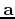
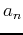
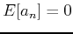
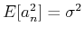
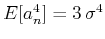
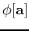

|
|
|
|
Homework 2 |
You can either write your answers to theoretical questions on paper or edit them in the file hw2/paper.tex. Please show all the mathematical derivations that you perform.
Suppose that the data vector  contains random noise: the data values  are independent and identically distributed with a zero-mean Gaussian distribution: , , . Find the mathematical expectation of .
The operator is implemented in the C code below.
void conv_lop (bool adj, bool add,
int nx, int ny, float* xx, float* yy)
/*< linear operator >*/
{
int f, x, y, x0, x1;
assert (ny == nx);
sf_adjnull (adj, add, nx, ny, xx, yy);
for (f=0; f < nf; f++) {
for (y = 0; y < ny; y++) {
x = y-f+1;
/* !!! CHANGE BELOW !!! */
if (x < 0 ) continue;
if (x >= nx) break;
if( adj) {
/* !!! INSERT CODE !!! */
} else {
yy[y] += xx[x] * ff[f];
}
}
}
}
|
void filter_lop (bool adj, bool add,
int nx, int ny, float* xx, float* yy)
/*< linear operator >*/
{
int i;
float t;
assert (ny == nx);
sf_adjnull (adj, add, nx, ny, xx, yy);
if (adj) {
/* !!! INSERT CODE !!! */
} else {
t = a*xx[0];
yy[0] += t;
for (i = 1; i < nx; i++) {
t = a*xx[i] + b*xx[i-1] + c*t;
yy[i] += t;
}
}
}
|
|
|
|
|
Homework 2 |